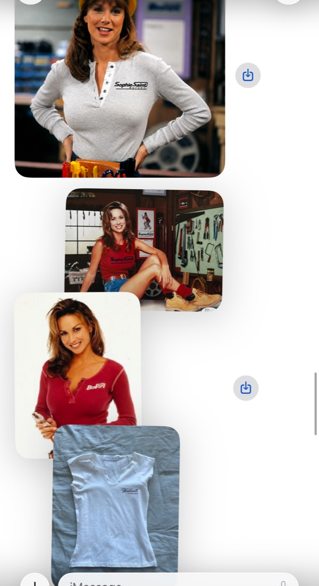
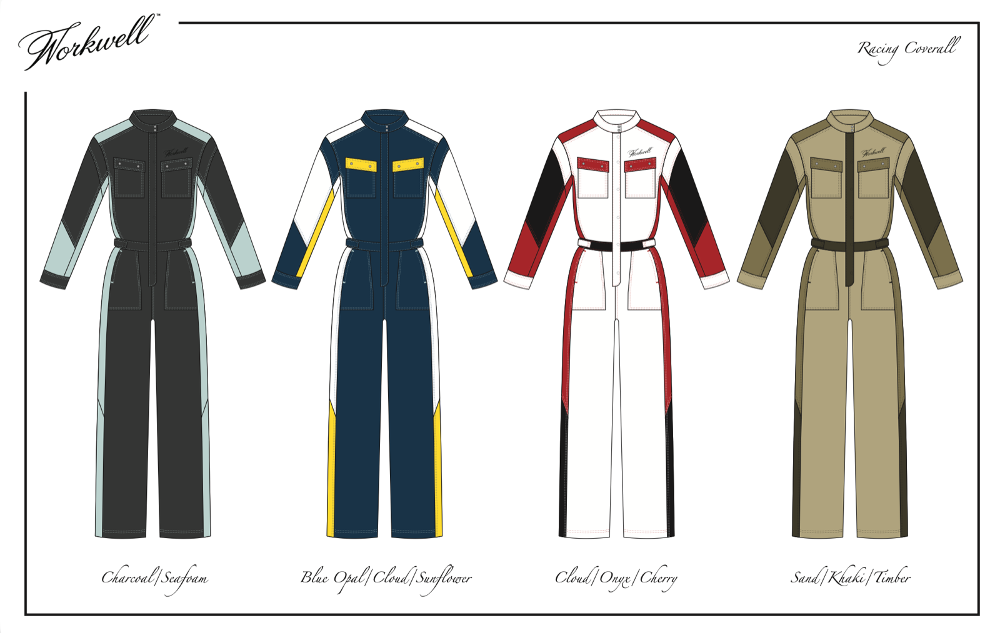

Project Brief Sophie Saint Motors · first merch drop
Prepared by Noah Glynn, What are we capable of? · June 6, 2026 Internal team brief. Direct link only, please don't share outside the team.
Sophie Saint Motors — first drop
A small, well-made cotton knit drop, produced in LA, to seed the brand before the first real collection.
The opportunity
Sophie Saint Martin restores vintage cars, teaches people how, and is building a brand around bringing more women into the automotive world. Her restoration videos reach into the millions, consistently. Sophie Saint Motors is that world: the restoration shop and content brand, with its site launching this month (Caroline Ridings is handling the design, and made the introduction).
This first run is merch, not the main line. It exists to put the brand on people, give Sophie something to wear in her videos, and seed the feel of the world before her first real collection. A separate women's workwear line, Workwell (coveralls, gloves, thermals), comes later; the merch can be carried over toward that launch.
What we're making
Pieces
~4 styles: tees and long-sleeves
Run
~100 per style (~400 total), made up front
Sizes
S / M / L, fitting small
Color
One colorway per piece
Fabric
Cotton; one long-sleeve in a heavier heather-grey
Price point
$45–65 retail
Sells on
Her own site and Instagram
Timeline
~6 weeks once sourcing locks
The look
Vintage workwear and garage-girl: a fitted, early-2000s racing-tee feel. Think heather grey, white, and red; ringer tees, a henley or placket with a small chest patch, clean racing graphics. Fit is the thing Sophie cares about most (she loves the way Brandy Melville fits), so we build to fit first.

Sophie's reference vibe (from @shop_rlt): fitted vintage racing tees, henley with a chest patch, and a heather-grey body/fabric reference.
Her standard
Sophie designs at a high level and works fluently with CAD. Her own Workwell "Racing Coverall" deck is a good read on the taste and colorway sophistication we're producing toward, even though the merch itself is simpler.

Sophie's Workwell "Racing Coverall" sketch deck (her own technical work), four colorways. Context for her standard, not the merch.
How we'll make it
Made in LA, small-batch cut-and-sew. At ~400 units on a 6-week clock, with a high fit bar, this is a domestic job, not overseas.
Built from pieces she already owns. Sophie has reference garments whose fit she loves; those become the patterns, with our modifications.
Through a maker we vet. Sophie has an LA maker who can sew if we supply the fabric and trims. We vet him (and line up a backup), and the rule is simple: he sews one sample of the hardest piece before we commit the run.
Fit first. A first sample, a fit check, and a final approved sample before anything is cut at volume.
Who's doing what
Sophie
Brand and creative direction. The taste and the call on look and fit.
Noah / What are we capable of?
Production end to end: sourcing, patterns, sampling, quality, delivery. And the brand and store, if we take it further.
Caroline Ridings
Graphics and logos, and the Sophie Saint Motors site.
LA maker
Cut-and-sew of the run (being vetted).
Where it stands
In setup. Scope is confirmed with Sophie. Next we get connected to her maker and her reference pieces, vet the maker, sample, then produce and deliver. Nothing is committed to production yet; the firm cost and plan follow the maker's quote and a fabric quote.
Possible next chapter, once the drop exists: the full brand and an AI-native online store to sell and run it. Sophie's call, when she's ready.